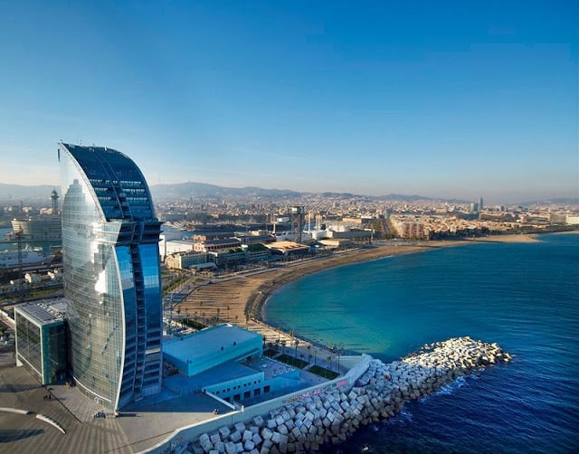
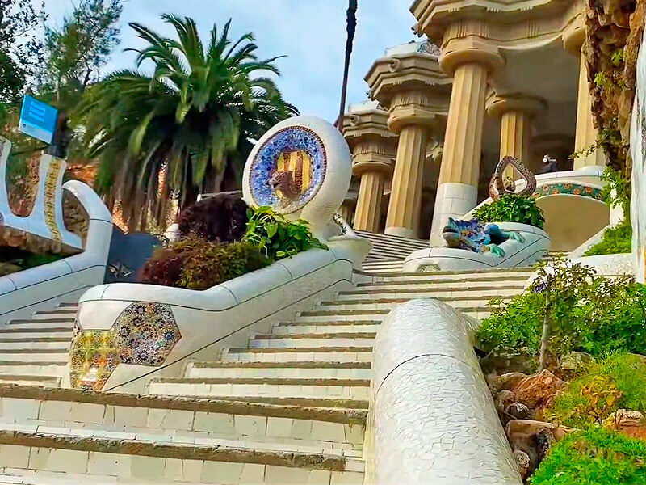

| Actividades | |||
|---|---|---|---|
| El NH Barcelona Stadium, antes conocido como NH Rallye, es el hotel más cercano al estadio del FC Barcelona y su museo. Si has venido para ver un apasionante partido, no hay un lugar mejor donde alojarte. Asimismo, si estás aquí por negocios, nos encontramos cerca del Palau de Congressos de Barcelona y el Centro de Convenciones en Gran Vía. Desde aquí puedes acceder fácilmente al aeropuerto, además de a las principales autopistas. | |||
| Menú | |||
| index | Servicios | Actividades | |
| | |||
| |  | |  |
| Casa de batlon | La playa de barceloneta | El Museo Nacional de Arte de Catalunya | El Park Güell |